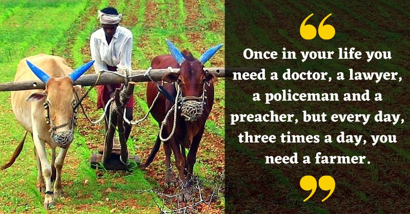

A G R I C U L T U R E
A Backbone of Our INDIA

“Agriculture is the greatest and fundamentally the most important of our industries."
A dry March, a wet April and a cool May fill barn and cellar and bring much hay. A hive of bees in May is worth a load of hay. A lawsuit is a fruit-tree planted in a lawyer's garden. A lazy man's farm is the breeding ground for snakes.
Agriculture is the art and science of cultivating the soil, growing crops, and raising livestock. It includes the preparation of plant and animal products for people to use and their distribution to markets.
Agriculture provides most of the world’s food and fabrics. Cotton, wool, and leather are all agricultural products. Agriculture also provides wood for construction and paper products.
These products, as well as the agricultural methods used, may vary from one part of the world to another.
Starting Stage of Agriculture
Over centuries, the growth of agriculture supported the development of cities. Before agriculture became widespread, hunting and gathering was how people fed themselves. Between 10,000 and 12,000 years ago, people gradually learned how to grow cereal and root crops, and settled down to a life based on farming.
Eventually, much of Earth’s population became dependent on agriculture. Scholars are not sure why this shift to farming took place, but it may have occurred because of climate change.
When people began growing crops, they also continued to adapt animals and plants for human use. Adapting wild plants and animals for people to use is called domestication. Hunter-gatherers began to domesticate animals and change the natural environment to grow more food even before settled farming became widespread.
Improved Technology
Many effective agricultural techniques have roots in pre-agricultural human history. For millennia, people have used controlled burning techniques to get rid of brush and debris, allowing edible plants to grow more abundantly and preventing larger wildfires during dry seasons. Today, large wildfires in North America and Australia demonstrate the importance of maintaining controlled burning practices perfected by many Native American tribes and Aboriginal Australian peoples.
Farming has also improved over the years. Early farmers cultivated small plots of land by hand, using axes to clear away trees and digging sticks to break up and till the soil. Over time, improved farming tools of bone, stone, bronze, and iron were developed. New methods of storage evolved. People began stockpiling foods in jars and clay-lined pits for use in times of scarcity. They also began making clay pots and other vessels for carrying and cooking food.
Around 5500 B.C.E., farmers in Mesopotamia developed simple irrigation systems. By channeling water from streams onto their fields, farmers were able to settle in areas once thought to be unsuited to agriculture. In Mesopotamia, Egypt, and China, people organized themselves and worked together to build and maintain better irrigation systems.